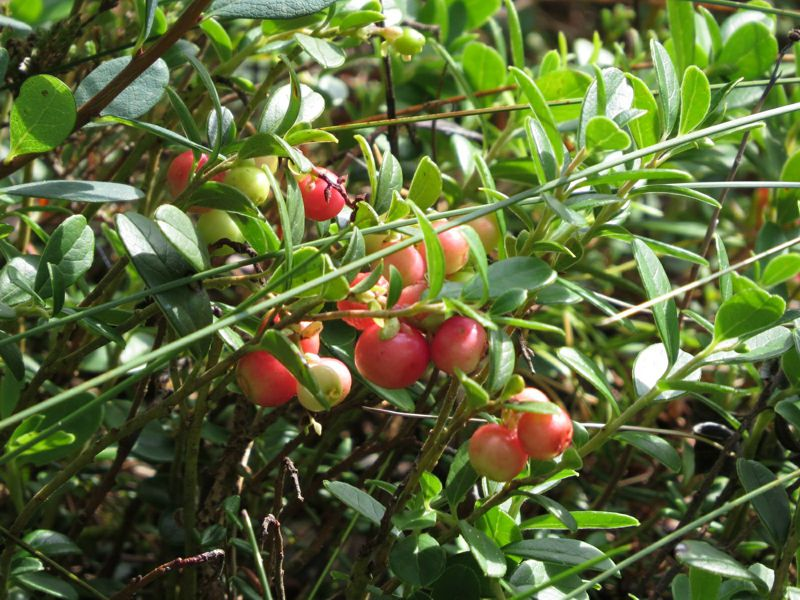

Preiselbeere
Vaccinium vitis-idaea
Ein rund ums Jahr belaubter Zwergstrauch mit weiß- bis rosafarbenen Blüten und glänzend roten Beeren in Trauben. Die ledriger Blätter sind oberseits dunkelgrün, unterseits hellbraun und drüsig punktiert (Lupe).
Die im rohen Zustand wenig schmackhaften Beeren sind gekocht eine Delikatesse und ergeben eine vorzügliche Beilage zu Wildgerichten. Natürlich laben sich auch Tiere an diesen Leckerbissen.